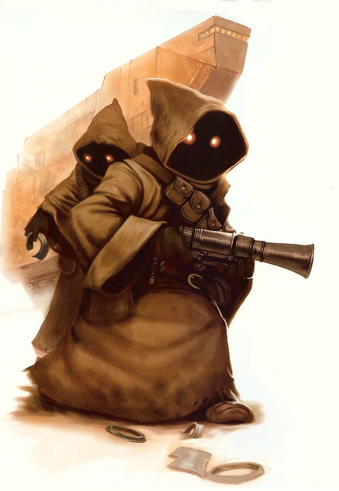

Jawa
jawa
Special Abilities: Jawas begin the game with one rank in Negotiation or Skulduggery. They still may not train Negotiation or Skulduggery above rank 2 during character creation.
Clever Negotiators: Jawas may use Cunning instead of Presence when making Negotiation checks.
Jawas are small humanoids who live on Tatooine, the harsh Outer Rim desert world that was the childhood home of both Anakin and Luke Skywalker. While Jawas layer themselves under thick robes, xenobiologists, through studying corpses and skeletal remains, have discovered that they have the appearance of gaunt, rodent-like creatures, with shrunken faces and yellow eyes.
Each Jawa is about a meter tall, with tiny, flexible hands and feet. Their evolutionary origins are a bit mysterious. Some theories contend that both Jawas and their neighbors, the Tusken Raiders, descended from an ancient species known only as the Kumumgah, while others insist that Jawas evolved from rodents. If they did evolve from rodents, most scientists believe that they gradually grew in size and learned to walk upright by reaching for lichens and fungi growing on underground cave walls—caves that once housed the rare underground springs around which their society initially developed.
These springs eventually dried up, and the Jawas adapted to their new environment with sheer ingenuity. To protect themselves from the fierce double suns of their world, they started wearing coarse, homespun cloaks with large hoods under which only their yellow, glowing eyes seem to be visible. Their eyes are magnified by polished orange gemstones embedded in their facial coverings to protect their sensitive rat-like vision from the bright sunlight. These gems, called durindfire, are found in the desert sands and are worthless to other species—but the Jawas find them invaluable.
For their own nourishment, Jawas obtain water by inserting long, thin hoses down the stems of the funnel flower, a flora native to Tatooine, and siphoning off the liquid. Their diet is primarily made up of hubba gourd, a fruit difficult for humans to digest, the name of which in the Jawas’ language translates to “the staff of life.
Most humans have noted that Jawas give off a strong, distinct, and usually unpleasant odor. This is the combined result of a mysterious solution in which they dip their clothes to retain body moisture, and the fact that they do not bathe often in their water-bereft environment. It is also partly related to their communication methods, half of which are pheromonal projections.
Jawa society is divided into clans or tribes. Once a year, all the clans will meet at a giant gathering in the great basin of the Dune Sea, where they share stories, trade items, and even barter sons and daughters as “marriage merchandise. ” The trading of family members in marriage is considered a good business deal, as it continues the diversity of their bloodlines. In fact, Jawa culture centers on family. They take immense pride in their clans and ancestry, and their language includes forty-three different terms to describe relationship, lineage, and bloodline. Clans keep track of these relations very closely, recording family lines with extreme detail. Few Jawas leave the clan lifestyle, and when they do, they can be found in disreputable Tatooine cities such as Mos Eisley and Mos Espa. Members of the clans travel together in large vehicles known as sandcrawlers—nuclear fusion-powered ore-hauling vehicles abandoned by contractors during the reign of the Old Republic. Jawas have modified these sandcrawlers to the point that their original purpose is virtually undetectable. Each crawler carries up to three hundred Jawas and acts as a fully equipped repair shop, allowing them to perform skilled reconstructions as they make their journey across the desert wastes.
To make their living, Jawas salvage, repair, and resell junk that they find in the desert. Sometimes they even “find” items that haven’t been lost, especially those that haven’t been locked down. Moisture farmers often discover their property disappearing, only for it to turn up in the possession of a Jawa who is selling it at a tidy profit. Because of this, they are reputed to be swindlers and thieves, but Jawas are not offended by the accusation and are instead proud of their ability to discover items that others “lose,” and also proud of their proficiency at repairing equipment. For junk that is unsalvageable, Jawas utilize high-powered solar smelters that melt things down into salable ingots.
While a portion of the Jawas are constantly on the move, searching for salvage, the remainder stay behind in clan fortresses built from large chunks of wrecked spacecraft. Master repair experts reside in these fortresses, where they perform advanced salvage procedures that exceed the capacity of the sandcrawler shops. These elaborate fortifications are often subjected to attacks by Sand People, who will kill Jawas in order to pillage their scavenged treasures and precious water. This is one of many harsh desert realities that contribute greatly to Jawas’ cautious, almost paranoid, nature, and as such they have made their defense into their best offense, through the stability of the fortresses they build. Jawas are not intense fighters, and because of their size, they’ll often run away when confronted. When cornered, however, Jawas have proven themselves to be very resourceful and capable users of the weapons that they scavenge from the desert sands.
A vast yellow globe baking in the heat of its twin suns, Tatooine was mistaken for a star by early explorers of the Outer Rim—and in the scorching heat of high noon, locals joke that those explorers weren’t so wrong. Life on Tatooine is a study in perseverance, but despite the inhospitable conditions, there is life here. Jawas, hooded rodent-like scavengers, scour Tatooine’s wastes for scrap they can salvage. Primitive desert warriors called Tusken Raiders wander the desert, abiding by ancient tribal traditions. Herds of eopies root for buried lichen, rock warts hunt for prey, and an unlucky traveler may hear the booming cries of the semi-legendary krayt dragon. And there are more recent arrivals: humans, Hutts, and all manner of spacefaring species.
Despite what bored young moisture farmers might tell you, Tatooine is fairly well known in the galaxy. The system sits at a juncture ofhyperspace routes: The Triellus Trade Route connects Hutt Space with a sizable chunk ofthe Outer Rim, while a loop ofthe Corellian Run sees traffic running to and from the Core Worlds. Space battles were common over Tatooine long before the planet’s settlement, and today Tatooine’s spaceports continue to thrive.
The meaning of the Jawas’ language is tied to these pheromonal emanations, which communicate their emotions and needs. It is, therefore, incomprehensible and cannot be learned by humans and other species. While Jawas can understand Basic, they have intense difficulty speaking it or any language other than their own, and thus, to trade with non-Jawas, they use a simplified form of their language that residents of Tatooine refer to as Jawa Trade Language.
The most prominent member of each clan is the shaman, a female Jawa whom the population believes possesses the ability to predict the future. While this has not been scientifically proven, recently discovered studies of the Jawas performed before the ascension of Emperor Palpatine assert that these female shamans exhibited something akin to Force abilities. Unlike any Jedi, however, they perform elaborate spells, hexes, and blessings to protect the tribe and provide wellness for its members. Each shaman takes on a student during her tenure, training this apprentice to take her place when she dies.
The clan shaman, through her influence, controls most tribal decisions relating to defenses, travel, and day-to-day life. She does not travel in the sandcrawler, but remains behind at the permanent fortress, where she can be better protected. In fact, Jawas will fight to defend the shaman even in the face of certain defeat. In his notes, anthropologist Hoole referred to an incident where he witnessed Jawas defending the shaman’s home against a force of Tusken Raiders with the ferocity of beings twice their size. They did not retreat or surrender, though nearly three-quarters of the Jawas lost their lives in the process.